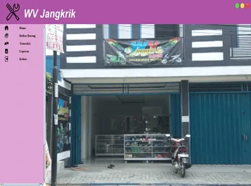
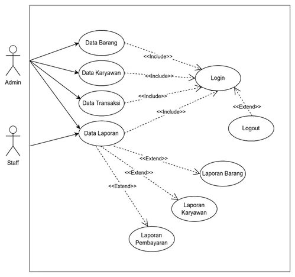
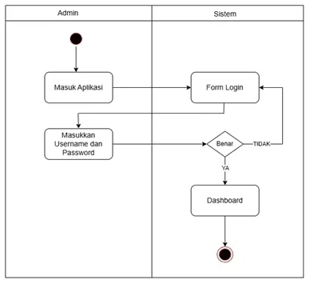
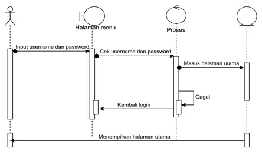
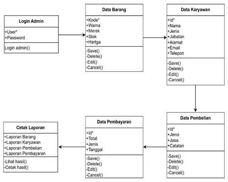
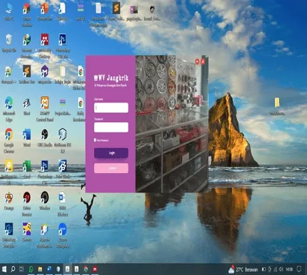
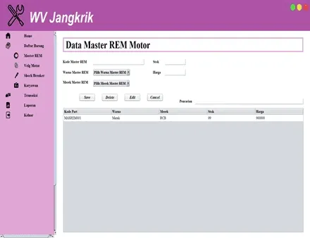
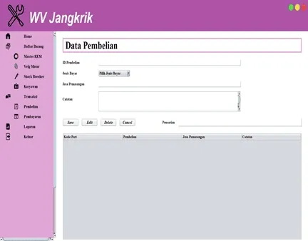
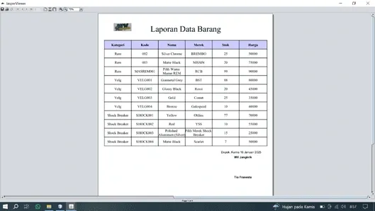

Motorcycle Accessories Administrative System
A desktop administrative and point-of-sale system developed for Toko Aksesoris Motor WV Jangkrik, a retail motorcycle accessories store. The application automates inventory tracking, cashier checkout transactions, supplier restock logging, employee records, and monthly accounting reports.


Main dashboard and navigation menu for Toko Aksesoris Motor WV Jangkrik.
Business Context & Problem
Toko Aksesoris Motor WV Jangkrik stocks hundreds of individual motorcycle parts and aftermarket accessories, including brake assemblies, shock absorbers, exhaust systems, electrical wiring, cosmetic body parts, and maintenance lubricants.
Before implementing this system, the shop logged every retail transaction and stock delivery into physical paper ledgers. This manual setup created familiar headaches: handwritten records frequently failed to match actual shelf counts, stockouts were discovered only when customers asked for missing parts, and tallying monthly revenue took hours of manual paperwork.
To fix these bottlenecks, we designed a centralized desktop client using Java (Swing) paired with a normalized MySQL database. The software enforces role-based access for administrators and cashiers, deducts inventory automatically with every sale, and generates structured turnover reports on demand.
Core System Modules
- Inventory Management (Master Barang): Central catalog allowing staff to add, update, search, and monitor parts (item code, product name, accessory category, cost price, retail price, and stock levels).
- Employee Administration (Karyawan): Staff records covering identities, roles (admin vs. cashier), contact numbers, and login credentials for system authentication.
- Inbound Procurement (Pembelian): Logs restock deliveries from parts distributors, tracks purchase costs, and increments warehouse inventory quantities upon confirmation.
- Cashier POS Billing (Pembayaran): Front-counter checkout interface that calculates item subtotals, applies discounts, computes change, and automatically decrements inventory counts in real time.
- Administrative Reporting (Laporan): Produces printable operational summaries covering inventory valuation, fast-moving items, daily and monthly sales totals, and supplier order histories.
System Design & UML Diagrams
The software was developed following object-oriented design principles, mapped out across four core UML diagrams:








Desktop Application Interface








Technical Stack
Desktop application runtime, user interface forms, event handlers, and database connections.
Relational database holding normalized tables for parts, employee credentials, and checkout receipts.
Primary development environment used for Swing GUI form layout and project builds.
Local server stack managing the MySQL daemon and table migrations during development.
Project Summary
| Project Title | Motorcycle Accessories Administrative System |
| Client / Context | Toko Aksesoris Motor WV Jangkrik |
| Application Type | Desktop Administrative & Inventory POS System |
| Architecture | Client-Database (Java Swing + JDBC + MySQL) |
| Database | MySQL (Relational normalized schema) |
| Core Modules | Inventory, Employees, Inbound Purchasing, POS Cashier, Reports |
| Developers | Robbi Rizaldi & Team |
Explore Portfolio
Return to the main showcase to view more projects and case studies: